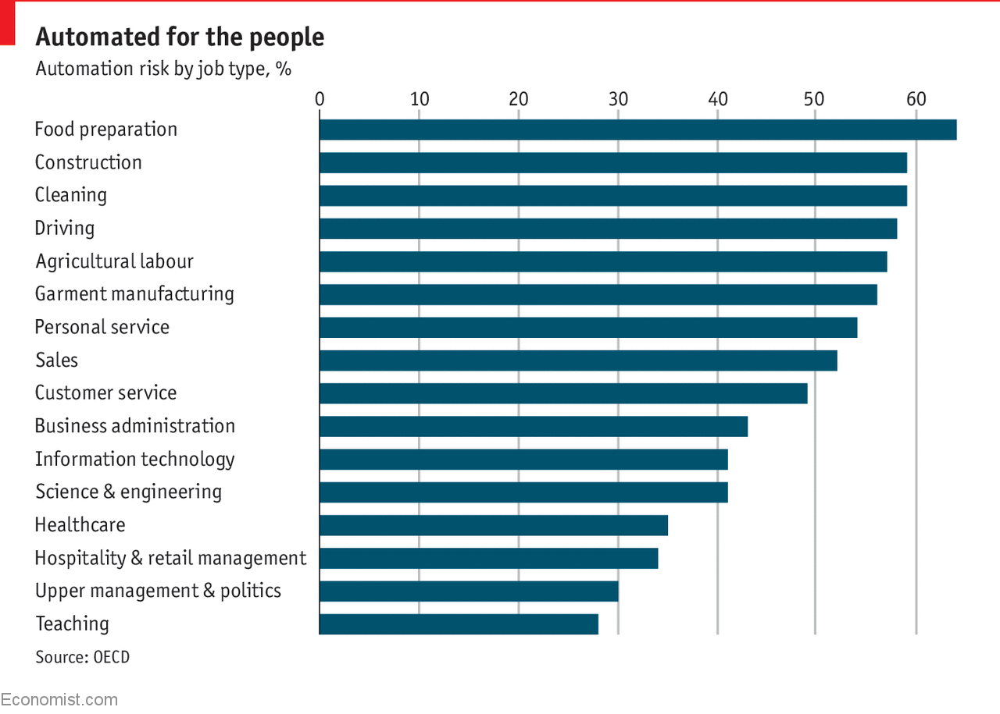

Deep Learning

In order for machine learning to progress in the future format, breakthroughs in multiple fields must be made. The first is in the fields of Natural Language Processing or NLP for short. This technology allows a computer to understand normal patterns of human speech and even understand slang in a normal conversation. This technology is used in everything such as virtual assistants and chatbots. As the need for daily interaction with artificial intelligence expands into our daily lives more and more, better speech recognition becomes increasingly important in order for the AI to accurately understand and carry out the tasks assigned to it. Another form of machine learning that must see a breakthrough is Graph Neural Networks. GNNs rely on image analysis to make deductions off of relationships of crucial objects, or nodes, being displayed in the picture. GNNs are most commonly used when examining instances of real world relationships such as cities and roads, human relationships, and knowledge graphs. They have been particularly difficult to work with in the past, however recent optimizations have made them much easier to use. They still can be difficult to work with, however, so they require further optimization until they can reach their peak. Finally, Variational Autoencoders or VAEs must see further development. VAEs are used in image recognition which is used frequently in technology such as facial recognition, image generation, and self-driving cars. They are a very accessible form of neural network, however still are far from perfect. Their accuracy is their biggest pitfall as many instances of their implementation require near perfect precision which is not yet attainable. Machine learning has the potential to make many jobs obsolete, as AIs are often more efficient, more effective, and cheaper than traditional employees. By the year 2030, machine learning and artificial intelligence could cause an increase of over $3.7 trillion on North America's GDP. Also, they could occupy over 29% of jobs requiring a bachelor's degree or higher and other industries such as fast food and office support could face a reduction of up to 90%. This dramatic shift in the workforce will further increase the focus on machine learning, optimizing them even further.
